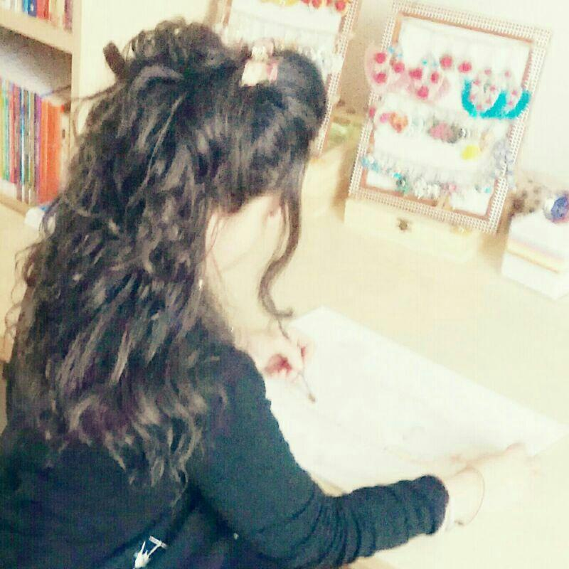

Francesca Innocenti Website
Benvenuti nel mio sito!
Benvenuti nel mio sito!
Francesca Innocenti nasce a Ravenna il 23 gennaio del 1987.
Diplomata all’Istituto d’Arte per il Mosaico "Gino Severini" a Ravenna nel 2006, in seguito frequenterà l’Accademia di Belle Arti della stessa città, diplomandosi nel Triennio Sperimentale in Mosaico nel 2009 e al Biennio Specialistico, in Arte e Restauro musivo nel 2011.
Nella sua esperienza scolastica sarà discente di personalità di alto livello professionale e artistico nell’ambito musivo contemporaneo come Marco De Luca, Adriana Morelli, Felice Nittolo, Luciana Notturni e Daniele Strada.
Ha sperimentato l’attività di atelier per un periodo di due mesi presso la Cooperativa Mosaicisti di Ravenna, sotto la guida dell'artista mosaicista Marco Santi.
« Facciamo che una poetica abbia quattro punti cardinali e che questi siano dominati dalla creatività definita come la capacità di produrre nuove idee, invenzioni, opere d’arte. Dall’immaginazione, come la capacità di saper elaborare liberamente e con fantasia i dati dell’esperienza sensibile ed i pensieri. Dalla fantasia, intesa come quella facoltà della mente umana di interpretare liberamente i dati forniti dall’esperienza oppure di saper rappresentare contenuti inesistenti, in immagini. Ed infine dall’inventiva, genialità ricca e fertile, potenza immaginativa e creativa. »
« Ecco una chiave di lettura per dare vita ad un'opera che intenda restare nel tempo, indelebile come le cose che ci circondano e che superano la materialità del contemporaneo. »
Francesca Innocenti
« Le immagini vanno viste quali sono, amo le immagini il cui significato é sconosciuto poiché il significato della mente stessa é sconosciuto »
René Magritte